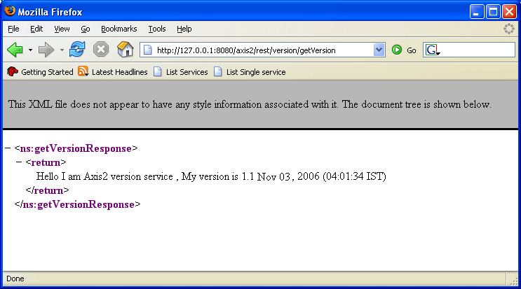

RESTful Web Services Support
This document presents an introduction on REST and REST with HTTP POST and GET.
Content
Introduction
WSDL 2.0 HTTP Binding defines a way to implement REST (Representational State Transfer) with Web services. Axis2 implements the most defined HTTP binding specification. REST Web services are a reduced subset of the usual Web service stack.
The Axis2 REST implementation assumes the following properties:
- REST Web services are Synchronous and Request Response in nature.
- When REST Web services are accessed via GET, the service and the operations are identified based on the URL. The parameters are assumed as parameters of the Web service. In this case, the GET based REST Web services support only simple types as arguments and it should adhere to the IRI style.
- POST based Web services do not need a SOAP Envelope or a SOAP Body. REST Web Services do not have Headers and the payload is sent directly.
Axis2 can be configured as a REST Container and can be used to send and receive RESTful Web service requests and responses. REST Web services can be accessed using HTTP GET and POST.
REST Web Services with HTTP POST
If REST is enabled, the Axis2 server will act as both a REST endpoint and a SOAP endpoint. When a message is received, if the content type is text/xml and if the SOAPAction Header is missing, then the message is treated as a RESTful Message, if not it is treated as a usual SOAP Message.
On sending a message, whether the message is RESTful or not, can be
decided from the client API.
Set a property in the client API.
... Options options = new Options(); options.setProperty(Constants.Configuration.ENABLE_REST, Constants.VALUE_TRUE); ...
Sample REST - HTTP POST Client
There is an example named, userguide.clients.RESTClient.java found in AXIS2_HOME/samples/userguide/src/userguide/clients which demonstrates the usage of the above. It uses the "echo" operation of the userguide.example1.MyService of the AXIS2_HOME/samples/userguide/src/userguide/example1.
The class source will be as follows:
public class RESTClient {
private static String toEpr = "http://localhost:8080/axis2/services/MyService";
public static void main(String[] args) throws AxisFault {
Options options = new Options();
options.setTo(new EndpointReference(toEpr));
options.setTransportInProtocol(Constants.TRANSPORT_HTTP);
options.setProperty(Constants.Configuration.ENABLE_REST, Constants.VALUE_TRUE);
ServiceClient sender = new ServiceClient();
sender.engageModule(Constants.MODULE_ADDRESSING);
sender.setOptions(options);
OMElement result = sender.sendReceive(getPayload());
try {
XMLStreamWriter writer = XMLOutputFactory.newInstance()
.createXMLStreamWriter(System.out);
result.serialize(writer);
writer.flush();
} catch (XMLStreamException e) {
e.printStackTrace();
} catch (FactoryConfigurationError e) {
e.printStackTrace();
}
}
private static OMElement getPayload() {
OMFactory fac = OMAbstractFactory.getOMFactory();
OMNamespace omNs = fac.createOMNamespace(
"http://example1.org/example1", "example1");
OMElement method = fac.createOMElement("echo", omNs);
OMElement value = fac.createOMElement("Text", omNs);
value.addChild(fac.createOMText(value, "Axis2 Echo String "));
method.addChild(value);
return method;
}
}Access a REST Web Service via HTTP GET
Axis2 allows users to access Web services that have simple type parameters via HTTP GET. For example, the following URL requests the Version Service via HTTP GET. However, the Web service arriving via GET assumes REST. Other parameters are converted into XML and put into the SOAP body.
http://127.0.0.1:8080/axis2/services/Version/getVersion
The result can be shown in the browser as follows:
For example, the following request,
http://127.0.0.1:8080/axis2/services/Version/getVersion
<soapenv:Envelope xmlns:soapenv="http://schemas.xmlsoap.org/soap/envelope/">
<soapenv:Body>
<axis2:getVersion xmlns:axis2="http://ws.apache.org/goGetWithREST" />
</soapenv:Body>
</soapenv:Envelope>
Resources
How I Explained REST to My Wife, By Ryan Tomayko- http://naeblis.cx/articles/2004/12/12/rest-to-my-wife
Building Web Services the REST Way, By Roger L. Costello- http://www.xfront.com/REST-Web-Services.html
Resource-oriented vs. activity-oriented Web services, By James Snell- http://www-128.ibm.com/developerworks/webservices/library/ws-restvsoap/